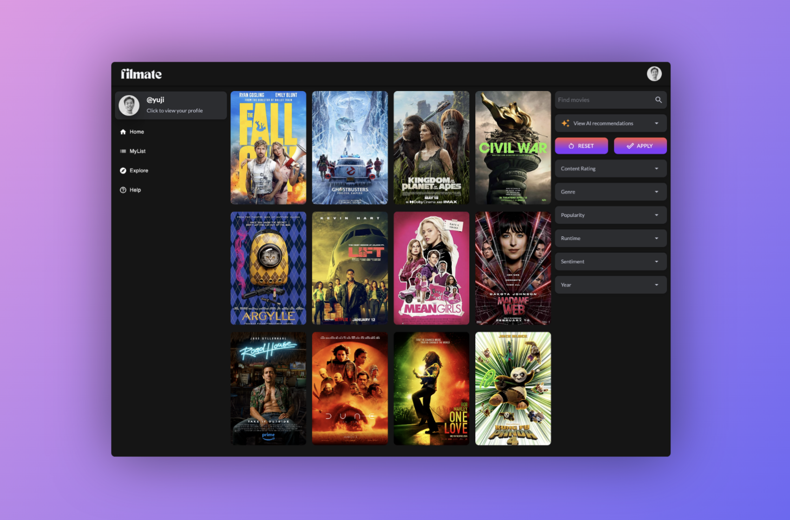

I have built a diverse array of web applications from scratch using modern technologies such as React and Flask. I have a strong proficiency in the SDLC process and frontend + backend development.
Node.JS
I have built a diverse array of web applications from scratch using modern technologies such as React and Flask. I have a strong proficiency in the SDLC process and frontend + backend development.
UIKit
I have built a diverse array of web applications from scratch using modern technologies such as React and Flask. I have a strong proficiency in the SDLC process and frontend + backend development.
Unity
I have built a diverse array of web applications from scratch using modern technologies such as React and Flask. I have a strong proficiency in the SDLC process and frontend + backend development.
Projects

neoo
I have built a diverse array of web applications from scratch using modern technologies such as React and Flask. I have a strong proficiency in the SDLC process and frontend + backend development.
ReSpringBoard
I have built a diverse array of web applications from scratch using modern technologies such as React and Flask. I have a strong proficiency in the SDLC process and frontend + backend development.